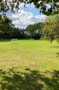
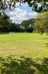

Speelveld
Willen uw kinderen graag actief bezig zijn? Dan is het Speelveld hier de ideale plek voor. Neem bijvoorbeeld een voetbal mee en ga lekker voetballen. Het speelveld is te vinden bij de Aagtevonklaan.
Willen uw kinderen graag actief bezig zijn? Dan is het Speelveld hier de ideale plek voor. Neem bijvoorbeeld een voetbal mee en ga lekker voetballen. Het speelveld is te vinden bij de Aagtevonklaan.
Wilt u uw kinderen graag laten buitenspelen? Dan is de Speelplaats Velsen een ideale plek om dit te laten doen. Hier staan meerderen speeltoestellen waarmee uw kinderen kunnen spelen of neem zelf speelmiddelen mee. De speelplaats is te vinden bij de Van Lenneplaan.

Ook aan de skaters onder uw kinderen is gedacht. Deze kunnen op het skatepark hun sport uitoefenen. Het kleine skatepark is te vinden bij het station. Naast de skateplek is ook een veld met lage doelen aanwezig waar gevoetbald kan worden.
 
